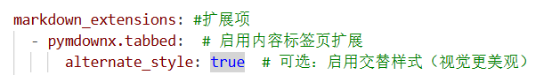
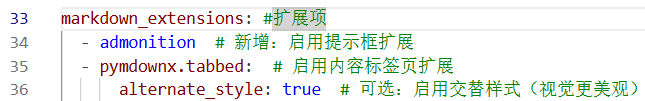

核心：Markdown 语法（Material 主题增强版）
Written by : CCChiJi
Material 主题对标准 Markdown 进行了扩展，支持表格、代码块、公式、注释等丰富功能，以下是常用语法及效果示例，推荐使用VScode编译，后文所有内容默认以VScode环境
文中提到的根目录都指文件夹下含有docs文件夹和mkdocs.yml文件的那个文件夹
基础文本格式
(部分效果由于格式问题无法体现，以语法为主)
| 语法 | 效果 | 说明 |
|---|---|---|
# 一级标题 |
一级标题 | #号后需要加一个空格，页面最大标题，建议每个页面只写 1 个 |
## 二级标题 |
二级标题 | 用于页面内的主要章节 |
### 三级标题 |
三级标题 | 用于章节内的子部分 |
**加粗文本** |
加粗文本 | 强调重要内容 |
*斜体文本* |
斜体文本 | 表示补充说明 |
***加粗斜体*** |
加粗斜体 | 结合两种效果 |
~~删除线~~ |
~~删除线~~ | 表示废弃内容 |
[链接文本](https://www.baidu.com) |
链接文本 | 外部链接，点击跳转 |
 |
插入图片，支持本地 / 网络图片 |
示例代码：
# 一级标题：Markdown 语法指南
## 二级标题：基础文本格式
这是 **加粗文本**，这是 *斜体文本*，这是 ~~删除线文本~~。
推荐访问 [MkDocs 官网](https://mkdocs.org)，以下是示例图片：

关于换行
Markdown 换行核心规则：默认连续回车不换行，需用特定语法触发，不同场景用法不同
普通换行（同一段落内换行
） 在需要换行的位置，添加 2 个及以上空格 后按回车，渲染后会显示为换行（软换行）
示例:
强制换行（分段式换行）
直接空一行（按两次回车），会生成新段落，两段之间会有间距（硬换行）
示例:
标签强制换行
用 HTML 标签 <br> 实现换行，无需空格，直接插入标签即可
示例:
列表（有序/无序/任务）
无序列表：
用-、*或+开头，支持嵌套
语法:
-、*、+后加一个空格，嵌套的子项需要在前面需要缩进一个制表符(Tab)，例如：
- 水果
- 苹果
- 香蕉
- 蔬菜
- 番茄
- 黄瓜
有序列表
用数字+.开头，自动编号（意思是，即使数字不连贯，也会顺序排列）
子项前加一个制表符(Tab)
语法:
效果:- 步骤一：安装MkDocs
- 步骤二：创建项目
- 步骤三：配置主题
- 打开mkdocs.yml
- 设置theme: material
任务列表
用-[]（表示未完成）和-[X]（表示已完成）表示：
-号和[]以及后面的文字描述需要各一个空格，同时[]内的x不用区分大小写，如果要表示未完成，需要加一个空格：[_]
语法:
效果:- 完成MkDocs安装
- 配置 Material 主题
- 部署到 GitHub
代码块（Material 语法高亮）
Material 支持 100+ 编程语言的语法高亮，用 ``` 包裹代码，指定语言名称即可
单行代码
用`包裹
语法:
效果:
mkdocs serve命令用于启动本地预览
多行代码块
语法: 在代码块开头的上一行、代码块结束的下一行也加上```即可
效果:
表格（支持对齐与样式）
用|分割列，:（英语）控制对齐（左对齐:---、居中:---:、右对齐---:(中间的-符号并不代表必须为三个)）
语法:
| 语法元素 | 用途 | 示例 |
| :------------- | :------------------- | :------------------- |
| `# 标题` | 页面章节标题 | `## 二级标题` |
| `**文本**` | 加粗强调 | **重要内容** |
| `[链接](url)` | 插入外部/内部链接 | [MkDocs](https://mkdocs.org) |
效果:
| 语法元素 | 用途 | 示例 |
|---|---|---|
# 标题 |
页面章节标题 | ## 二级标题 |
**文本** |
加粗强调 | 重要内容 |
[链接](url) |
插入外部/内部链接 | MkDocs |
引用与注释
引用
用>开头，后加一个空格，支持嵌套
语法:
效果:
这是一级引用: MkDocs是一个快速、简单、华丽的静态网站生成器。
这是二级引用：Material 主题让文档更美观。
注释（仅编辑时可见，渲染后隐藏）
用[//]:#(注释内容)表示 （符号部分为英文输入），适合记录编辑思路
语法:
效果:
这是公开内容。
Material 主题独有的扩展语法
内容标签页
用===后加一个空格，分隔标签页，适合分类展示内容，支持嵌套
子项前加一个制表符(Tab)
该部分由于是扩展语法，因此如果希望能正常渲染，需要下载扩展包，否则会渲染成普通文本
下载扩展包步骤和代码:
- 开启VScode中的终端

- 复制MkDocs文件路径，即文件夹下含有docs文件夹和mkdocs.yml文件的那个文件夹

- 使用cd跳转到对应文件夹

- 下载扩展包

- 修改mkdocs.yml中的配置 （修改完记得保存）

语法: 代码块部分还是要按语法加上```表示
=== "Python代码"
print("Hello MkDocs!")
=== "C代码"
#include <stdio.h>
int main()
{
printf("hello,MkDocs!");
return 0;
}
效果:
提示框（警告 / 信息 / 成功）
用!!! 类型开头，!!!后需要加一个空格，其中类型支持note(信息)、warning(警告)、success(成功)等
该部分依赖于提示框（Admonition）的核心扩展配置，无需下载，但需要手动进行配置
配置方法:
修改mkdocs.yml中的配置即可 （修改完记得保存）

语法:
!!! note "信息提示"
本地预览命令：`mkdocs serve`，访问 http://127.0.0.1:8000 查看。
!!! warning "警告提示"
修改 `mkdocs.yml` 后，若预览无变化，需重启 `mkdocs serve`。
!!! success "成功提示"
文档更新后，执行 `mkdocs gh-deploy` 即可部署到 GitHub。
效果:
信息提示
本地预览命令：mkdocs serve，访问 http://127.0.0.1:8000 查看。
警告提示
修改 mkdocs.yml 后，若预览无变化，需重启 mkdocs serve。
成功提示
文档更新后，执行 mkdocs gh-deploy 即可部署到 GitHub。
项目优化：添加图片、附件与导航
添加本地图片
方法:
- 在
docs目录下创建images文件夹，放入图片(如CCChiJi.png) - 在Markdown中引用:
效果:
添加附件(如PDF)
方法:
- 在
docs目录下创建files文件夹，放入附件(如guide.pdf) - 用链接引用，支持下载
效果:
优化导航结构
修改mkdocs.yml的nav配置，支持多级导航和外部链接
示例: